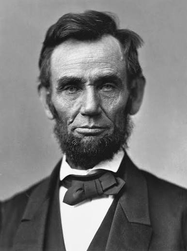

Abraham Lincoln adalah Presiden ke-16 Amerika Serikat yang lahir pada 12 Februari 1809 di Kentucky dan wafat pada 15 April 1865 di Washington, D.C.. Ia berasal dari keluarga sederhana dan dikenal sebagai sosok yang gigih serta belajar secara otodidak hingga menjadi seorang pengacara.
Lincoln kemudian terjun ke dunia politik dan bergabung dengan Partai Republik. Ia menjabat sebagai presiden dari tahun 1861 hingga 1865 dan memimpin negara pada masa sulit, yaitu saat Perang Saudara Amerika.
Salah satu pencapaiannya yang paling terkenal adalah mengeluarkan Proklamasi Emansipasi yang bertujuan menghapus perbudakan. Abraham Lincoln dikenang sebagai pemimpin yang jujur, tegas, dan berperan besar dalam menjaga persatuan Amerika Serikat, hingga akhirnya ia meninggal dunia akibat dibunuh oleh John Wilkes Booth.